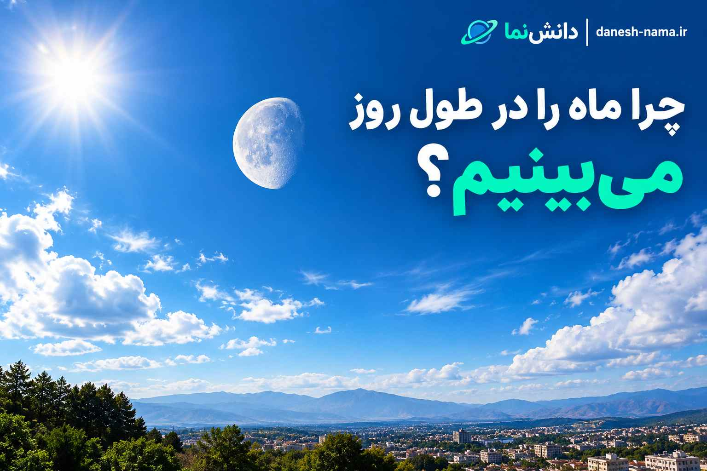

چرا ماه را در طول روز میبینیم؟ دلیل علمی دیده شدن ماه در آسمان روز
شاید برایتان پیش آمده باشد که در یک روز روشن به آسمان نگاه کنید و ناگهان ماه را ببینید. دیدن ماه در کنار آسمان آبی ممکن است عجیب به نظر برسد، چون معمولاً ماه را با شب و تاریکی تصور میکنیم. اما دیده شدن ماه در طول روز کاملاً طبیعی است و دلیل سادهای دارد: ماه در طول روز هم در آسمان حضور دارد و نور خورشید را بازتاب میدهد.
ماه خودش مانند خورشید نور تولید نمیکند. چیزی که ما به عنوان نور ماه میبینیم، در واقع نور خورشید است که به سطح ماه برخورد کرده و بخشی از آن به سمت زمین بازتاب شده است. بنابراین اگر ماه در موقعیت مناسبی نسبت به زمین و خورشید قرار داشته باشد، میتوانیم آن را حتی در آسمان روشن روز مشاهده کنیم.
آیا ماه واقعاً در روز هم در آسمان است؟
بله. ماه در مدار خود به دور زمین حرکت میکند و در نتیجه موقعیت ظاهری آن نسبت به خورشید و زمین دائماً تغییر میکند. به همین دلیل زمان طلوع و غروب ماه هر روز دقیقاً یکسان نیست.
در واقع، ماه تقریباً نیمی از زمان خود را در قسمت روزانه آسمان قرار میدهد؛ البته این به معنی آن نیست که همیشه با چشم غیرمسلح بهراحتی دیده میشود. روشنایی آسمان، موقعیت ماه، مرحله ماه و شرایط جوی همگی روی قابل مشاهده بودن آن تأثیر دارند.
ماه چگونه دیده میشود؟
برای دیدن ماه باید نوری از آن به چشم ما برسد. خورشید منبع اصلی نور در منظومه شمسی است و سطح روشن ماه نور خورشید را بازتاب میکند.
خورشید همیشه تقریباً نیمی از سطح ماه را روشن میکند. اما از روی زمین، با توجه به موقعیت ماه در مدارش، بخش متفاوتی از قسمت روشن آن را میبینیم. همین موضوع باعث ایجاد فازهای ماه میشود.
بنابراین شکل ماه واقعاً هر شب تغییر نمیکند؛ چیزی که تغییر میکند، زاویه دید ما نسبت به قسمت روشن ماه است.
چرا ماه در روز دیده میشود ولی ستارهها کمتر دیده میشوند؟
یکی از پرسشهای جالب این است که اگر ستارهها هم در طول روز در آسمان هستند، چرا معمولاً آنها را نمیبینیم اما ماه را میتوانیم ببینیم؟
دلیل اصلی، تفاوت شدید روشنایی آنهاست. نور خورشید در جو زمین پخش میشود و باعث میشود آسمان روز بسیار روشن شود. نور بسیاری از ستارهها در مقابل این روشنایی بسیار ضعیف است و به چشم ما نمیرسد.
ماه به زمین بسیار نزدیکتر از ستارههاست و نور بازتابی آن به اندازهای قوی است که در شرایط مناسب میتوانیم آن را روی زمینه روشن آسمان تشخیص دهیم.
در چه فازهایی از ماه میتوانیم آن را در روز ببینیم؟
زمان دیده شدن ماه ارتباط مستقیمی با فاز آن دارد. برای مثال، ماه کامل تقریباً هنگام غروب خورشید طلوع میکند و در حوالی طلوع خورشید غروب میکند؛ بنابراین بیشتر زمان حضورش در آسمان در شب است.
در مقابل، فازهای دیگر میتوانند باعث شوند ماه در بخشی از ساعات روز نیز در آسمان قرار داشته باشد. برای نمونه، ماه تربیع اول معمولاً بعدازظهر و اوایل شب قابل مشاهده است و ماه تربیع آخر بیشتر در ساعات صبح دیده میشود.
| فاز ماه | زمان تقریبی قابل مشاهده | وضعیت معمول |
|---|---|---|
| ماه نو | تقریباً همزمان با خورشید | معمولاً بهسختی دیده میشود |
| هلال افزاینده | بعدازظهر تا اوایل شب | بخشی از روز قابل مشاهده است |
| تربیع اول | بعدازظهر تا شب | بهخوبی در روز دیده میشود |
| محدب افزاینده | بعدازظهر تا شب | در بخشی از روز قابل مشاهده است |
| ماه کامل | غروب تا صبح | بیشتر در شب دیده میشود |
| محدب کاهنده | شب تا صبح | صبحها نیز قابل مشاهده است |
| تربیع آخر | نیمهشب تا صبح | در ساعات صبح دیده میشود |
| هلال کاهنده | صبح تا پیش از ظهر | در آسمان صبحگاهی دیده میشود |
چرا ماه کامل معمولاً در روز دیده نمیشود؟
ماه کامل زمانی رخ میدهد که زمین تقریباً بین خورشید و ماه قرار گرفته باشد و سمت رو به زمین ماه تقریباً کاملاً توسط خورشید روشن شده باشد.
به همین دلیل ماه کامل تقریباً هنگام غروب خورشید طلوع میکند و حوالی طلوع خورشید غروب میکند. البته ممکن است در شرایط خاص، مدت کوتاهی از روز نیز بتوان آن را نزدیک افق مشاهده کرد.
آیا ماه نو در طول روز بالای سر ماست؟
در زمان ماه نو، ماه تقریباً در جهت خورشید قرار دارد. به همین دلیل در طول روز میتواند در آسمان باشد، اما دیدن آن بسیار دشوار است.
از طرف دیگر، سمت ماه که رو به زمین است در این حالت تقریباً در تاریکی قرار دارد و بخش روشن ماه به سمت خورشید است. علاوه بر این، روشنایی شدید آسمان روز باعث میشود مشاهده هلال بسیار باریک ماه نو دشوار باشد.
فازهای ماه چرا ایجاد میشوند؟
ماه در حدود یک ماه یک چرخه کامل از فازهای مختلف را طی میکند. این چرخه از ماه نو آغاز میشود و پس از عبور از هلال افزاینده، تربیع اول، محدب افزاینده، ماه کامل، محدب کاهنده، تربیع آخر و هلال کاهنده دوباره به ماه نو میرسد.
این چرخه حدود ۲۹٫۵ روز طول میکشد. علت تغییر شکل ظاهری ماه، تغییر موقعیت آن نسبت به زمین و خورشید است، نه اینکه ماه واقعاً شکل خود را تغییر دهد.
آیا نیمهای از ماه همیشه روشن است؟
تقریباً بله. در هر لحظه، نور خورشید تقریباً نیمی از سطح ماه را روشن میکند. اما از زمین همیشه نمیتوانیم تمام این نیمه روشن را ببینیم.
وقتی ماه در مدار خود حرکت میکند، زاویهای که از آن به قسمت روشن ماه نگاه میکنیم تغییر میکند. بنابراین گاهی تقریباً تمام نیمه روشن را میبینیم و گاهی فقط بخش کوچکی از آن را.
چرا گاهی ماه در روز کمرنگ به نظر میرسد؟
آسمان روز به دلیل پراکنده شدن نور خورشید در جو زمین روشن است. بنابراین تضاد بین ماه و پسزمینه آسمان کمتر از زمانی است که ماه را در یک آسمان تاریک شب میبینیم.
به همین دلیل ممکن است ماه در روز سفید، کمرنگ یا حتی کمی متمایل به آبی به نظر برسد. در شب، زمینه تاریک آسمان باعث میشود روشنایی ماه بسیار برجستهتر به نظر برسد.
آیا زمان دیدن ماه هر روز تغییر میکند؟
بله. چون ماه به دور زمین حرکت میکند، زمان طلوع و غروب آن نیز از روزی به روز دیگر تغییر میکند.
این تغییر تدریجی یکی از دلایلی است که ماه در یک روز ممکن است هنگام صبح دیده شود و چند روز بعد در ساعات بعدازظهر یا شب ظاهر شود.
پس اگر یک روز ماه را صبح دیدید و چند روز بعد آن را در آسمان عصر مشاهده کردید، این اتفاق کاملاً طبیعی است و نتیجه حرکت ماه در مدار زمین است.
آیا میتوان با چشم غیرمسلح ماه روز را دید؟
بله. برای دیدن ماه در روز معمولاً به تلسکوپ نیاز ندارید. اگر ماه در موقعیت مناسب باشد و شرایط آسمان مناسب باشد، میتوان آن را با چشم غیرمسلح مشاهده کرد.
برای پیدا کردن آن بهتر است ابتدا به موقعیت تقریبی ماه توجه کنید. استفاده از برنامههای نجومی یا تقویمهای مربوط به فاز ماه نیز میتواند به پیدا کردن زمان و جهت مناسب کمک کند.
ماه در روز؛ یک پدیده کاملاً طبیعی
دیدن ماه در آسمان روز یکی از سادهترین نمونههای نجومی است که نشان میدهد آسمان همیشه آنطور که در تصاویر یا کتابهای کودکانه میبینیم تقسیمبندی نشده است. ماه فقط یک جرم شبانه نیست؛ بسته به موقعیتش نسبت به زمین و خورشید، میتواند در ساعات مختلف شبانهروز دیده شود.
بنابراین دفعه بعد که در یک روز روشن ماه را دیدید، بدانید که چیزی عجیب اتفاق نیفتاده است. شما در واقع نور خورشید را میبینید که از سطح ماه بازتاب شده و پس از رسیدن به چشم شما، ماه را در آسمان روز قابل مشاهده کرده است.
نظرات کاربران